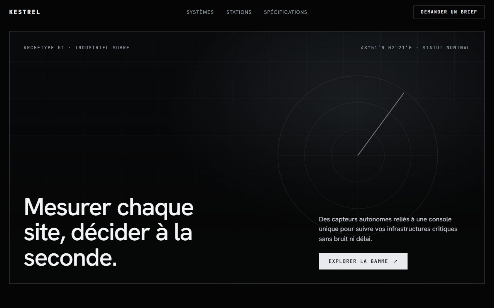
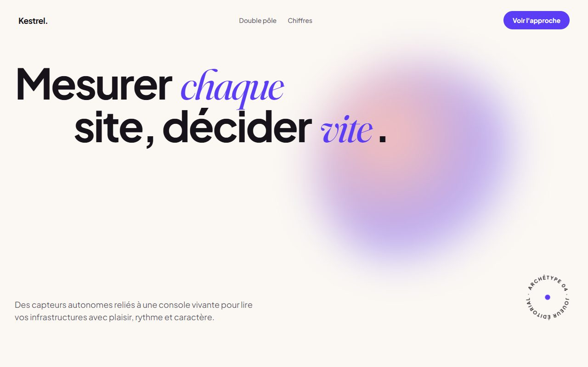
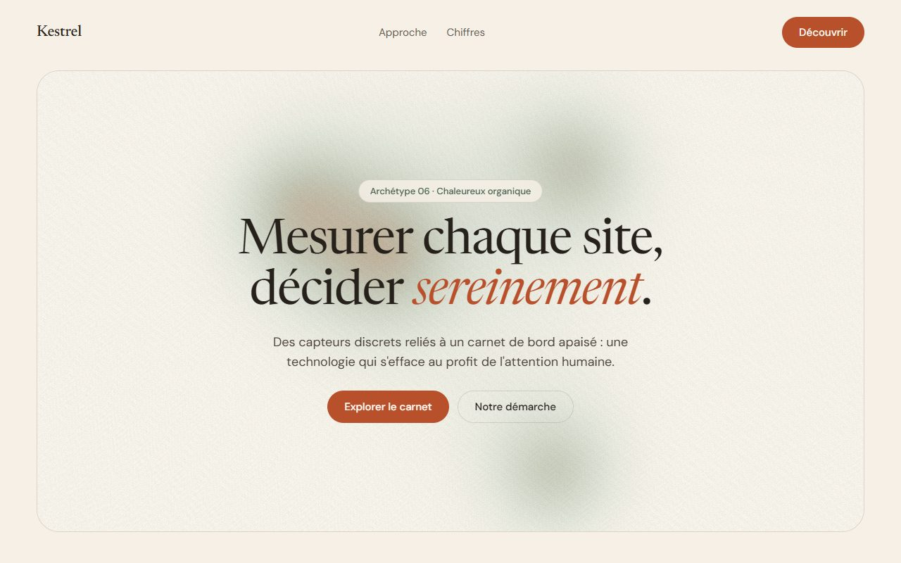
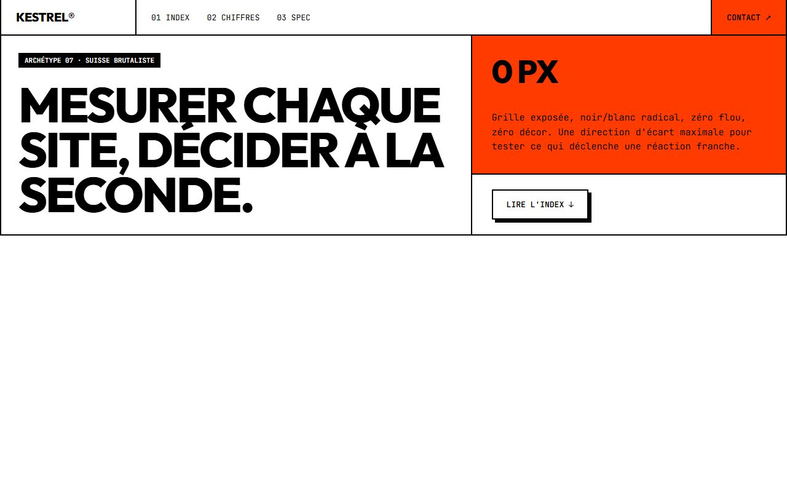

anduril.com · 0px · dark
Industrial Sober
Pure matte black, razor 0px corners, full-frame media bento, zero ornament.
Open specimen ↗Tact · Open-source design layer
Stop shipping the same generic dark-purple SaaS grid. Compare six divergent styles on a shared brief, mix parts with live WCAG contrast checks, test WebGL2 shaders, and export a clean token contract.
Zero external Three.js bundle. Pointer-reactive, paused automatically offscreen and under reduced motion, with CSS fallbacks and instant GLSL copy.
Every style renders the exact same realistic telemetry brief so teams compare direction, not copywriting.

anduril.com · 0px · dark
Pure matte black, razor 0px corners, full-frame media bento, zero ornament.
Open specimen ↗
editorial-taste · 10px · light
Achromatic #EDEDED / #151515, Geist + Mono, 5px rhythm, shadowless glass.
Open specimen ↗
orchestrated.nl · hubtown · WebGL
Full-frame WebGL scene, HUD perimeter, side chapters, visible Reduce Effects button.
Open specimen ↗
5lab.co · 22px · light
Offset sans and italic Fraunces headline, rotating circular badge, mix-blend geometry.
Open specimen ↗
north.cloud · langchain · WebGL
Stepped display headline, 4-crosshair viewfinder around flow shader, monospace density.
Open specimen ↗
mode.com · svgator · WebGL
Warm sand, terracotta, and sage, Newsreader serif, 26px radii, light-mode lava shader.
Open specimen ↗
International Style · 0px · light
Pure white, 2px black structural grid, exposed numbered index rows, orange accent.
Open specimen ↗design lab · hybrid mixer
Take palette polarity from Editorial, radii from Industrial, and a WebGL backdrop from Cinematic. Verify OKLCH WCAG AA/AAA ratios live and export style-dna.json or tokens.css with zero signup.
Launch Design Lab →Tact is standalone by design. Every lock emits standard JSON, CSS variables, and a verifiable DESIGN.md spec that drops into Claude Code, Codex, Cursor, or any downstream app engine.
Distance along six style axes guarantees the user sees real visual contrast before writing a line of product CSS.
Combine palette from one direction with typography or radius from another while contrast gates check AA/AAA live.
Export style-dna.json, tokens.css, DESIGN.md, or studio.json in one click with zero vendor lock-in.
Free, open-source, zero accounts, and static-file friendly. Open the Design Lab now or explore all 76 CSS, UI, and WebGL effects.